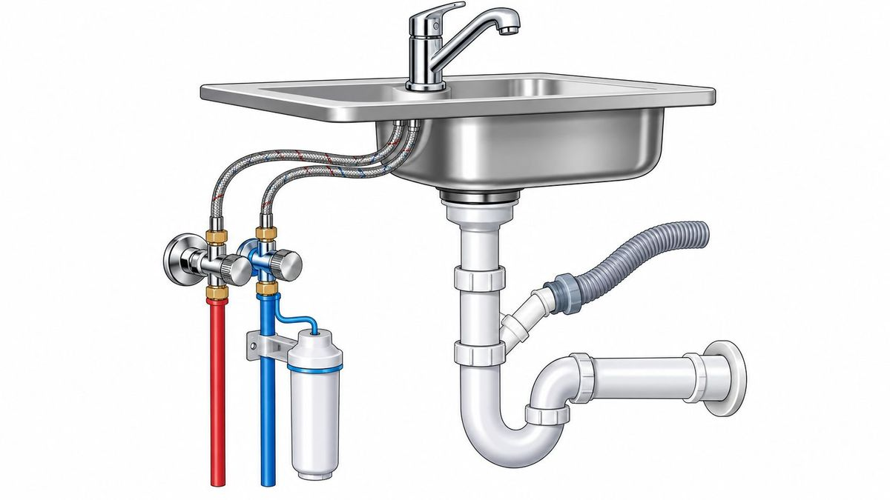

под мойку нужны 2 вывода воды 1/2" на высоте 500–600 мм от пола, канализация Ø50 с уклоном 20–30 мм на метр и отдельный отвод Ø32–40 под посудомойку. Межосевое расстояние под смеситель — 150–180 мм. Ошибка в 30–50 мм по высоте стоит 8 000–25 000 руб.: тумбу приходится резать, сифон не влезает, фильтр упирается в ведро.
Сколько выводов нужно под мойку
Типовая кухонная мойка занимает тумбу 600–800 мм. Внутри неё одновременно живут сифон, два гибких подвода, запорные краны, фильтр и иногда измельчитель. Каждый лишний узел — минус 50–80 мм свободного места.
| Потребитель | Выводы | Привязка |
|---|---|---|
| Смеситель мойки | ХВС + ГВС 1/2" | 500–600 мм от пола, межосевое 150–180 мм |
| Посудомоечная машина | ХВС 1/2" + слив Ø32–40 | в соседней тумбе, 400–600 мм от пола |
| Фильтр 3-ступенчатый | ХВС 1/2" через тройник | рядом с выводами, нужно 200×400 мм |
| Измельчитель отходов | слив Ø90–110 под мойкой | по центру чаши, ниже сифона |
| Проточный нагреватель | ХВС 1/2" + кабель 3×2,5 мм² | отдельная линия, 3,5–8 кВт |
Если техника ещё не куплена, закладывают максимум: два вывода воды, два отвода канализации (мойка и ПММ), тройник под фильтр и место под розетку в соседней тумбе.
Высота и разметка выводов
Столешница 850–900 мм, корпус тумбы — 720–750 мм. Выводы воды ставят так, чтобы гибкая подводка шла вниз, а не вверх: иначе в шланге остаётся вода и он быстрее трескается.
| Параметр | Значение | Почему так |
|---|---|---|
| Высота ХВС/ГВС | 500–600 мм от чистого пола | ниже сифона, шланг идёт с изгибом |
| Межосевое смесителя | 150–180 мм | стандарт подводки 3/8–1/2" |
| Отступ от стены | 50–80 мм | кран не упирается в заднюю стенку |
| Слив ПММ | 400–600 мм от пола | шланг не перегибается, вода уходит самотёком |
| Длина гибкой подводки | до 1 500 мм | длиннее — падение давления и риск протечки |

Разметку делают от готового пола, а не от стяжки: разница между черновым и чистовым полом — 30–80 мм, и именно на неё чаще всего «уезжают» выводы.
Канализация: диаметр, уклон, сифон
| Участок | Диаметр | Уклон | Комментарий |
|---|---|---|---|
| Мойка → стояк | 50 мм | 20–30 мм/м | меньше 20 мм/м — засор, больше 30 — вода уходит без смыва |
| ПММ → сифон | 32–40 мм | 15–20 мм/м | шланг с петлёй на высоте 400–600 мм |
| Сифон мойки | 40–50 мм | — | гидрозатвор 50–70 мм |
| Измельчитель | 90–110 мм | — | прямой выпуск в сифон |
Горизонтальный участок длиннее 3 м требует ревизии или прочистки. Повороты — двумя отводами по 45°, а не одним 90°: на резком повороте скапливается жир и через 6–12 месяцев появляется засор.
Материалы: что выбрать
| Материал | Цена за метр | Срок службы | Когда уместен |
|---|---|---|---|
| Полипропилен PPR 20/25 мм | 90–140 руб. | 25–30 лет | скрытая разводка в штробе, пайка |
| Сшитый полиэтилен PEX 16 мм | 60–110 руб. | 30–50 лет | коллекторная разводка в гофре |
| Металлопластик 16 мм | 80–150 руб. | 15–20 лет | открытая разводка, ремонт без пайки |
| Медь 15 мм | 350–600 руб. | 50 лет и более | дорогой ремонт, пайка или пресс |
Скрытые соединения на резьбе в стене не оставляют: только пайка, пресс или сварка. Резьбовой фитинг под плиткой — это потенциальная протечка, которую не видно до появления пятна у соседей.
Запорная арматура и защита от протечек
- Шаровые краны 1/2" на каждом выводе — 500–1 500 руб. за штуку, с американкой для снятия смесителя без перекрытия стояка.
- Коллектор с расходомерами — 3 000–7 000 руб., удобен при разводке на 3–5 точек.
- Система защиты от протечек (кран с электроприводом + датчики) — 6 000–18 000 руб. на кухню.
- Фильтр грубой очистки перед смесителем — 800–2 500 руб., продлевает жизнь картриджам.
Диаметр подбирают по расходу: 20 мм хватает на смеситель и посудомойку при давлении 2–3 бар, 25 мм — если одновременно работают мойка, фильтр и проточный нагреватель. На 10 м трубы 20 мм при расходе 0,3 л/с теряется около 0,25 бар, на 25 мм — 0,08 бар. При давлении на вводе 1,5 бар разница решает: пойдёт вода из душа на кухне или нет.
Порядок работ
- Определить место мойки и модель смесителя, скачать паспорт с межосевым расстоянием.
- Разметить выводы от чистового пола с учётом толщины стяжки и плитки.
- Отштробить стены под трубы, глубина штробы — диаметр трубы плюс 10–15 мм.
- Смонтировать стояки и отводы, проверить уклон канализации уровнем.
- Опрессовать систему давлением 1,5 от рабочего (6–9 бар), выдержать 30 минут.
- Закрыть штробы, установить тумбу, подключить сифон и проверить на протечки под нагрузкой.
Смета 2026
| Работа / материал | Цена | На кухню |
|---|---|---|
| Труба PPR 20 мм | 90–140 руб./м | 10–16 м — 1 000–2 200 руб. |
| Фитинги, тройники, уголки | 40–250 руб. | 15–25 шт. — 1 500–5 000 руб. |
| Шаровые краны 1/2" | 500–1 500 руб. | 2–4 шт. — 1 000–6 000 руб. |
| Канализация Ø50 | 180–320 руб./м | 2–4 м — 500–1 300 руб. |
| Штробление | 350–600 руб./м | 8–14 м — 3 000–8 000 руб. |
| Монтаж точки | 1 200–2 500 руб. | 4–6 точек — 5 000–15 000 руб. |
| Фильтр 3 ступени | 4 000–12 000 руб. | 1 шт. |
Итого разводка под мойку с фильтром — 18 000–45 000 руб. Перенос выводов после укладки плитки: демонтаж 1–2 м², новая штроба, замена плитки — 8 000–25 000 руб.
Чек-лист перед штроблением
- Модель смесителя известна, межосевое расстояние проверено по паспорту.
- Выводы размечены от чистового пола, а не от стяжки.
- Уклон канализации 20–30 мм/м проверен уровнем.
- Под посудомойку заложены отдельные вода и слив.
- Скрытых резьбовых соединений в стене нет.
Частые вопросы
Можно ли сделать разводку металлопластиком?
Можно, открыто или в гофре с доступом. Скрывать резьбовые фитинги в стене нельзя: они текут через 10–15 лет, и найти протечку без вскрытия плитки невозможно.
На какой высоте делать выводы, если столешница 900 мм?
500–600 мм от чистового пола. Верхний предел — 650 мм: выше начинается сифон, и шланг придётся изгибать петлёй.
Нужен ли отдельный слив для посудомойки?
Желателен. Общий сифон с мойкой даёт обратный ток воды при сливе и запах. Отдельный отвод Ø32–40 с петлёй на 400–600 мм решает проблему.
Какой уклон канализации правильный?
Для Ø50 — 20–30 мм на метр. При 10 мм/м жир оседает на стенках, при 50 мм/м вода уходит, оставляя твёрдые фракции.
Обязательна ли опрессовка?
Да. Испытание давлением 6–9 бар в течение 30 минут выявляет непровар и ослабший фитинг до того, как стены закроют плиткой.
Что делать, если трубы проходят близко к стене?
Использовать угловые краны с отводом вбок и гибкую подводку 500–800 мм. Минимальный зазор от стены до оси трубы — 50 мм.
Можно ли вывести воду из-под пола?
Можно, но только в гофре или гильзе с доступом и с уклоном слива. Вывод из пола удобен для острова, однако при протечке придётся вскрывать стяжку — на кухне это 15 000–40 000 руб.
Источники
Материал подготовлен с опорой на следующие документы и данные:
Дисклеймер
Материалы журнала «Ремонт на примерах» носят информационный характер. Приведённые цены, сроки и нормативы являются ориентировочными: они зависят от региона, состояния объекта, уровня исполнителей и текущей рыночной ситуации, поэтому не могут служить точной сметой или гарантией результата. Перед началом работ проконсультируйтесь со специалистами и проверяйте актуальные требования нормативных документов. Редакция не несёт ответственности за решения, принятые на основании этих материалов.